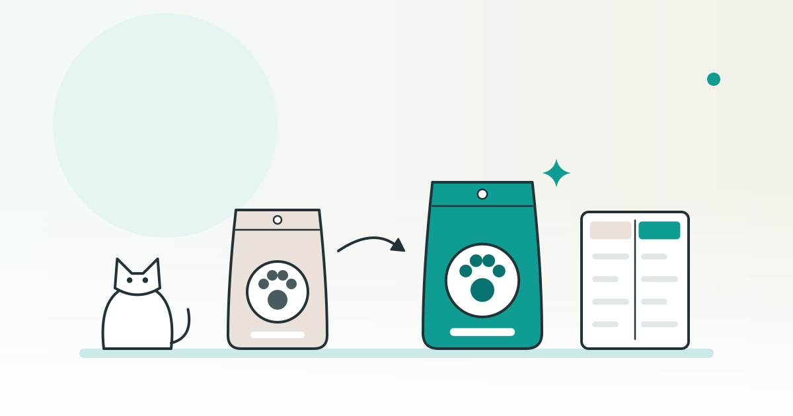

SHOPKIT コラム
ペット用品の仕様が変わったら旧商品と新商品の案内を分ける

販売中のペット用品について、素材や付属品などの変更が分かったら、どの商品が対象かを先に確かめましょう。変更前後の資料と在庫、注文時に出していた説明を結び付けます。一人でお店を続ける方に向けて、旧商品と新商品の案内を混ぜないための記録を紹介します。
この記事は、完成品のネットショップを販売している SHOPKIT が書いています。
販売元からの変更の知らせと、対象の入荷分を結び付ける
変更の知らせを受けた日と、商品が切り替わる範囲を分けて記録します。販売元の文面や資料を保存し、対象の品番、種類、色、入荷分を確かめましょう。知らせが来た日以降の商品が、すべて新仕様だとは決めないようにします。
入荷分は、同じ時期や同じ発注で受け取った商品のまとまりとして、仕入れの記録と結び付けます。販売元が入荷分を見分ける番号や印を示している場合は、その情報も残してください。店内の品番の付け方そのものには広げず、どの現物と資料を対応させるかを確認します。
手元に旧仕様と新仕様がある場合は、置き場所と在庫の記録でも区別します。外観が似ている物は、写真の印象だけで分類せず、販売元が示した見分け方と現物を照らしましょう。
変更の前と後の商品情報を、対照表にする
同じ項目について、変更前後の情報と根拠を並べます。分かる所だけを埋め、まだ確かめていない所は確認が残る欄に分けてください。記載がないことを、その部分は変わっていないという意味にしないようにします。
| 照らす項目 | 変更前の記録 | 変更後の記録 |
|---|---|---|
| 対象 | 品番・種類・対象の入荷分 | 新仕様と確認できた入荷分・見分ける情報 |
| 素材や寸法 | 前の資料や実測記録の内容、単位 | 新しい資料や現物で確かめた内容、単位 |
| 付属品・使い方の案内 | 同梱物と対象の説明書 | 変更の有無が分かった同梱物と説明書 |
| 根拠 | 資料の名前・日付、写真の保存先 | 変更通知・回答、確認した日と人 |
寸法を比べる場合は、測った所と単位が同じかも確かめます。素材名や部品名が違う場合は、その表記を残して質問にし、同じ物だと自分で言い換えないようにしましょう。商品説明の基本や採寸の全手順には広げず、変更点の記録に絞ります。
変更が確認できたことと、性能や安全性の評価は分けます。新仕様という理由だけで、良くなったという説明を足さず、資料や現物で確かめた変更内容を案内しましょう。
注文の時点で出していた説明を、記録に残す
今のページだけでなく、注文時にどの仕様を案内していたかを残します。注文番号と、選ばれた品番・種類、当時の説明や写真の保存先を結び付けましょう。これから送る現物がどの入荷分かも照らします。
仕様変更の前に受けた注文を、新しいページの説明に読み替えないようにします。説明と送る現物に違いが見つかった場合は、対象の注文と変更点を整理し、必要な確認やお客様への案内を検討してください。新しい物だから同じ条件で送ってよいとは決めません。
注文時の表示を保存できていない場合は、確認できる資料と、分からない部分を分けます。お客様が何を見たか、どの案内を受けていたかについて、記録から分かる範囲を超えて埋めないようにしましょう。
古い仕様と新しい仕様を、同じページで混ぜない
写真、説明、同梱物の案内が、販売する仕様と合っているかを照らします。写真だけ前のまま、付属品だけ新しい説明、といった組み合わせがないかを確認しましょう。
旧仕様と新仕様を扱う場合は、読み手がどちらを選び、どの現物が届くかを見分けられる案内にします。記録や現物で区別できない所は、先に販売元へ確かめ、仕様を決めつけた説明を出さないようにしてください。使うサービスの設定名や操作手順は、ここでは扱いません。
消費者庁の景品表示法関係ガイドライン等には、比較する広告や、ネット取引の表示についての資料などが一覧に載っています。仕様が変わった商品の案内にどの資料が関係するかは、題名だけで決めず、迷う所は窓口で確かめましょう。
ページを直すときは、変更した所、根拠、作業した日と表示を確かめた日を残しましょう。新しい写真を用意したことと、その写真がどの仕様の物かを確かめたことも分けて記録します。
関連：ネットショップの商品写真の撮り方｜一覧でそろって見える条件と使えない画像
分からないときは、販売元に対象の範囲を聞く
変更の有無だけでなく、どの商品に当たるかを答えてもらえる質問にします。品番、種類、仕入れの記録、現物の印や写真をそろえ、変更通知のどの部分が分からないかをまとめましょう。
確認したいことは、対象の入荷分、前後を見分ける方法、変更された項目、使うべき資料です。回答には、確認した相手と日付、どの範囲への回答かを付けて残します。回答がなかった項目を、変更なしという扱いにはしません。
消費者庁の製品別品質表示の手引きは、繊維製品や雑貨工業品などの品目から、表示の案内を探せる一覧です。この一覧だけでペット用品すべてに同じ表示の決まりが当てはまるとは判断せず、個別の表示の扱いは対象品目の公的な案内で確かめましょう。
販売元の資料と現物が合わない場合も、違う点と未確認の範囲を残します。性能・安全性や、個別の契約・表示の判断が必要な所は、根拠を整理し、関係する窓口に確かめてください。
関連：ネットショップの仕入れ先はどう探す？個人が使える仕入れ先と確かめること
お店を買って始めるときは、受け取った商品情報の日付を確かめる
購入前には、商品情報がどの仕様・入荷分に対応する資料かを確認しましょう。写真、素材、寸法、同梱物の一覧について、日付と根拠を見られるか、変更を知ったときに誰へ質問するかを聞いておきます。
SHOPKITの2026年10月15日時点のサービスページは、商品と店舗を整えて販売を始める準備をした状態でお渡しすると案内しています。お渡しする内容には、お店一式と仕入れの情報、運営・集客のマニュアルが含まれます。出典：お渡しするもの。
検討するときは、受け取った情報と今の現物を照らす方法、分からない点を確かめる相手を質問に残しましょう。マニュアルが付くことと、今後の仕様変更の確認・案内を誰が行うかは、分けて確かめます。
関連：猫服・猫用品のネットショップを始める｜犬服との違いと品ぞろえ
よくある質問
ペット用品の変更通知が来たら、その日から新仕様として扱いますか？
知らせを受けた日と、商品が切り替わる範囲は分けます。対象の品番や入荷分、現物の見分け方を販売元へ確かめて記録しましょう。
仕様変更の資料に書かれていない所は、前と同じと考えてよいですか？
記載がないことを変更なしとは扱わず、確認が残る項目に分けましょう。どの範囲についての回答かが分かる形で、販売元に質問します。
旧仕様の説明で受けた注文は、新しいページの情報で確認しますか？
注文時の説明や写真と、送る現物の入荷分を照らします。今の説明に読み替えず、違いがある場合は対象の注文と変更点を整理しましょう。
新しい商品写真を用意したら、仕様変更の記録も完了ですか？
写真がどの仕様の物か、説明や同梱物の案内と合うかも確かめます。変更した所と根拠、作業日、表示を確認した日を残しましょう。
※ この記事のSHOPKITのお渡しするものは、2026年10月15日時点のサービスページの記載です。公的資料は2026年10月26日に確認しました。個別の商品に関わる表示・契約などの判断が必要な所は、公的な案内と関係する窓口で確かめてください。